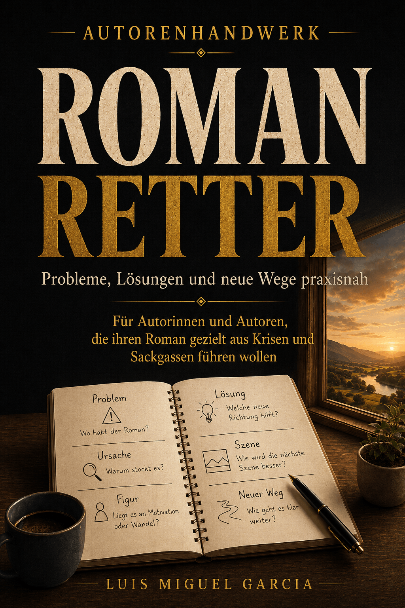

Warum ein Plot langweilig wirken kann
- Die Hauptfigur verfolgt kein klares Ziel.
- Ereignisse folgen aufeinander, aber nicht auseinander.
- Probleme werden gelöst, ohne neue Kosten oder Folgen zu erzeugen.
- Der Konflikt bleibt auf derselben Intensität.
- Die Figur reagiert nur, statt Entscheidungen zu treffen.
- Zu viele Szenen bestätigen nur, was der Leser bereits weiß.
Prüfe Ursache und Wirkung
Schreibe für zentrale Abschnitte jeweils zwei Sätze: Weil X geschieht oder entschieden wird, muss Y folgen. Wenn zwischen vielen Stationen nur „und dann“ passt, fehlt möglicherweise Kausalität.
Prüfe außerdem, ob Entscheidungen Optionen schließen, Beziehungen verändern oder neue Risiken erzeugen. Genau dort bekommt Handlung Gewicht.
Ein kleines Diagnosebeispiel
Schwach wäre: Eine Ermittlerin erhält einen Hinweis, fährt zu einem Lagerhaus und findet dort zufällig den nächsten Hinweis. Die Ereignisse bewegen sie zwar durch Orte, aber ihre Entscheidungen verändern wenig.
Stärker wird die Kette, wenn sie einen Zeugen gegen dessen Willen unter Druck setzt, dadurch zwar den Standort des Lagerhauses erfährt, aber zugleich den Täter warnt. Der Fortschritt erzeugt selbst das nächste Problem. Genau diese Verbindung kann aus Bewegung Handlung machen.
Repariere gezielt statt größer
Versuche nicht zuerst, Explosionen, Verfolgungsjagden oder neue Geheimnisse einzubauen. Verstärke stattdessen Ziel, Widerstand, Preis und Konsequenz. Oft reicht eine präzisere Entscheidung der Figur, um mehrere spätere Szenen neu aufzuladen.
Schnellcheck
- Was will die Hauptfigur konkret?
- Wer oder was arbeitet aktiv dagegen?
- Welche Entscheidung verschlechtert oder verändert die Lage?
- Steigt der Preis des Scheiterns?
- Entsteht das nächste Problem aus dem vorherigen?
Wenn das Problem vor allem im Mittelteil auftritt, lies Romanmitte langweilig. Für die Gesamtdiagnose: Mein Roman funktioniert nicht. Wenn du den Plot noch planst statt reparierst, ist Plot planen der passendere Einstieg.

TIEFER ARBEITEN
Romanretter
Für zusammenhängende Diagnose- und Reparaturarbeit über mehrere Ebenen des Romans.
Romanretter kennenlernenNoch nicht veröffentlicht.